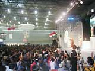
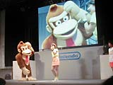
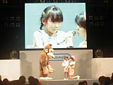
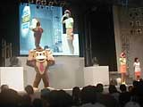
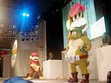
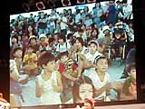

 任天堂の人気キャラクター、ドンキーコングの楽しい着ぐるみショーが中央ステージで行われました。ステージ前には子どもたちをはじめとして、お客さんがギッシリ。座席にすわれなかった人たちは周囲にすわったり立ったりして、ドンキーの登場を待っています。
そんななか、司会のお姉さんのナレーションでドンキーコングが登場。クイズのコーナーがはじまりました。お姉さんが「わかったおともだちは手をあげて」というと、みんな「ハイ！ハイ！」と、スゴい元気！ 動物の声をあてるクイズだから、子どもたちも自信満々です。 |
|  １問めに答えたのは８歳のむつみちゃん。ちょっと恥ずかしそうだけどドンキーと握手できてうれしそうでした。２問めに答えたのは元気いっぱいの５歳のよしたかくん。３問めはお父さんと妹と遊びにきたというしおりちゃん。みんな、みごと大正解。プレゼントをもらって客席にもどっていきました。 |
|  クイズの間も、ステージ上でドンキーが身動きするたび、子どもたちから歓声があがります。ほんとにドンキーって人気者！ 女の子のファンもたくさんいたゾ。 |
 ここで、いよいよショーのはじまり。今回のお話は、ボイスチェンジャーを使ってドンキーコングと友達のディディーを引き裂こうとするクランプ将軍のお話です。キングクルールに命じられ、ディディーの声をマネてドンキーをだますクランプ。ドンキーと引き裂かれたディディーをとらえてイジめます。ディディーは必死になってドンキーコングを呼びますが、どうも声が届かないよう。そこで、ディディーは会場のみんなに「一緒にドンキーを呼んで！」と頼みます。いっせいに「ドンキーコング！」と叫ぶお客さんたち。でも、まだまだ声の大きさが足りません。もう一度さらに大きな声で「ドンキーコング！」と叫びます。みんなの元気な声で、無事ディディーを助けることができたドンキー。めでたしめでたしで、お話は終わりました。最後に、みんなでドンキーに手をふってショーは終了。
|
 立ち見のお客さんもたくさんいたのに、子どもたちはお話が終わるまで熱心にステージを見つめていました。海外のプレス関係者がビデオ撮影をする姿もチラホラ見られ、「世界に愛されるドンキーコング」を実感できるショーでした。
|